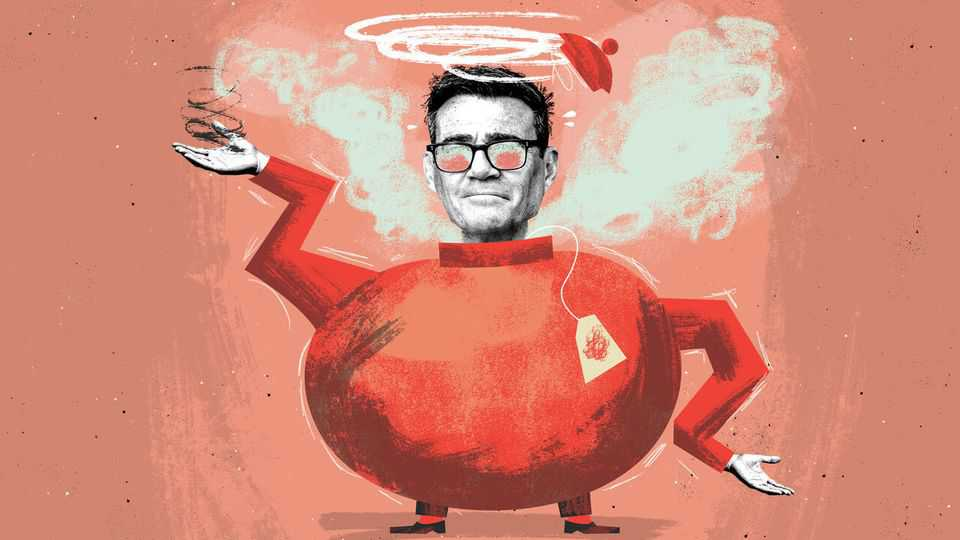

A big-state prime minister meets a small-minded British public
Taxed Enough Already

Sep 17th 2026
Wider still, and wider? Andy Burnham ran to be prime minister with unbounded ambitions for the British state. Four decades of neoliberal policies would be rolled back. Council houses would be built, the north reindustrialised and a struggling water supplier nationalised. Much was left ambiguous (just what is “public control”?) But a former New Labour special adviser knows the suggestive force of the English language.
A man who prides himself on having the common touch, Mr Burnham might check out the British Social Attitudes survey, which has been asking the same questions about taxes and spending since 1983. It charts how the public has responded to government spending like a thermostat-twiddler, clicking on and off in response to cycles of largesse and restraint. When politicians spend too much, or too little, the electorate reliably pushes back.
At 36%, the share who now think taxes and social spending should increase is the lowest since 2013, the height of Britain’s post-financial-crisis austerity drive. It has dropped by 19 points since a peak in 2022, when governments everywhere indulged in a spree of covid-19 stimulus packages and energy bail-outs, and were mostly applauded. Britons who think the size of the state should be frozen are, for the first time since 2015, the plurality. Those who want to shrink it entirely have never been a big tribe in Britain, but at 19% they are now twice as numerous as when Margaret Thatcher was at her zenith.
In sum: a prime minister with the most expansive ambitions for the state since the 1970s faces the most hawkish public since the Tory chancellor George Osborne bestrode Westminster with a scythe. Rarely has such a mismatch existed between a prime minister’s ambitions and the public’s appetite to pay for them. In Mr Osborne’s era, America’s Tea Party movement of populists and libertarians coined the backronym “taxed enough already”. Britain lacks the organisation or the “don’t tread on me” placards, but it has the mood. Tea time has arrived.
The backlash is no surprise. At 37% of gdp, the tax burden is the highest since 1948. Voters may appear delusional in demanding tax restraint at a moment when the bond markets have the Treasury on notice and an ageing population is straining the public finances. But for Christopher Wlezien, the academic who first spotted the thermostatic views of American taxpayers, it is a sign of a healthy democracy. Voters have a clear idea of what size state they want, and they know when it has got out of whack. For all the fears of declining media literacy, when it comes to tax, the public senses when the room is too hot.
Tea time ill suits a prime minister who aspires to great social reforms. Take social care, which Mr Burnham has suggested could be fixed “if everybody on the nhs principle contributed a little”. Britons agree that the social-care system is broken, but only a minority are willing to pay more to fix it. Free at the point of use is not a proposition with popular support.
Doubtless he knows this. But Mr Burnham’s party has never really answered the painful question of what it means to be a Labour government in an age of fiscal restraint. And so, while promising to roll back neoliberalism, Mr Burnham also promised to stick to his predecessor’s pledge not to increase the four taxes that account for the bulk of government revenues. Or, as he put it, he promises “the biggest change in our lifetimes to the way the country is run and it is consistent with the 2024 manifesto”. His project has the logic of an Escher print.
If tea time brings opportunities to remake the state, Mr Burnham will miss them. He will not cut welfare spending to pay for defence, since national security “can’t come at the expense of social security”. Yet support for increasing benefits for the poor is at the lowest level since 2009. And if you think Britons are deaf to the case for funding the armed forces more lavishly, consider this statistic. Only 16% now say they are confident that America would come to Britain’s aid if it were attacked. About those hard truths of geopolitics that politicians believe the electorate cannot bear? Prime minister, people are gagging to hear them.
The last time Britons declared themselves taxed enough already, the nhs enjoyed historically high performance and satisfaction ratings. Now they are near historical lows. But has tea time come around despite the parlous condition of public services, or because of them? The problem with Mr Burnham’s ambitions is not just their cost but their credibility. The British state struggles to remove tonsils and catch fly-tippers. To watch Mr Burnham heap steel nationalisation on Whitehall, too, is like watching children at a wedding buffet, piling their plates with eclairs they cannot possibly consume.
The Conservatives find it easier to govern when the public favours largesse than Labour does when people crave restraint. In office, Tories follow the thermostat wherever it points. “The public didn’t want Stafford Cripps-style drinking our own urine,” wrote Boris Johnson, a big-spending prime minister who pretended the previous decade of hairshirted Tory government had never happened. His colleagues fretted that he had broken the thermostat, leaving Britons hooked on furloughs and subsidies.
They needn’t have worried. Duly, the thermostat clicked again. And so Kemi Badenoch enjoys the rarest of fortunes: being a Tory leader facing a Labour prime minister who hankers for a larger state and a public unwilling to pay for it. In government she would face an invidious inheritance: any administration will need a chunky mix of spending cuts and tax rises to stabilise the public finances. But tea time is a fine time to be a Tory in opposition. It would take unusual incompetence to mess it up. ■